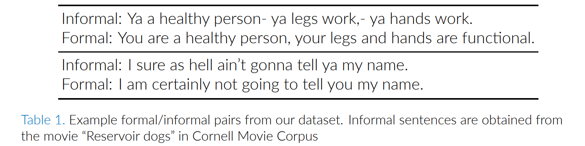
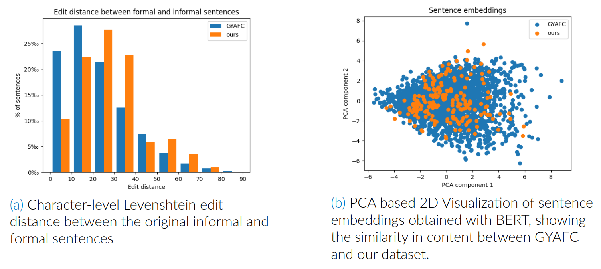
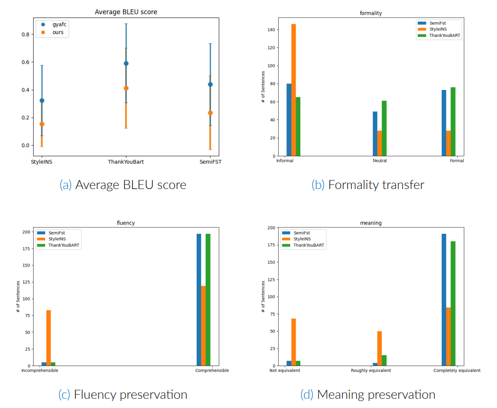

Text Style Transfer using Transformer Models
Semester Project


An assessment of the ability of three NLP models to transfer text style with an emphasis on translation from informal to formal style.
Abstract
- Style transfer is the task of automatically transforming a piece of text in one particular style into another while preserving the original meaning and content.
- Existing approaches can be rule- and phrase-based, or rely on pretrained large language models (LLMs). They are limited by the lack of training data: human annotators are often used to rewrite sentences from one style to another.
- In this project, we aim to evaluate the generalization of three models that solve the problem of formality style transfer, focusing on informal to formal translation.
Method

- We evaluated three SOTA LLMs: Thank You BART!, StyleINS, and SemiFST.
- The models in our project are trained on GYAFC dataset, which contains 110K informal/formal sentence pairs obtained from Yahoo Answers L6 corpus.
- We created our evaluation dataset based on Cornell Movie Corpus which contains dialogues from various movies.
- Each of the team members selected 40 informal sentences from movies of their choice, and rewrote the sentence in a formal way. In total, our dataset has 200 entries.
Evaluation metrics
- BLEU score evaluates the quality of translation from one language or style to another. It is based on how close the model’s translation is to a human translation.
- For Human-based evaluation, each of us manually evaluated the data for criteria formality (informal / neutral / formal), fluency (comprehensible / incomprehensible), and meaning preservation (completely / roughly / not equivalent).
Results

- All papers demonstrated lower BLEU score on our dataset. Thank You BART performed best, and was followed by SemiFST and StyleINS.
- Human-based evaluation demonstrated equivalent performance of Thank You BART and SemiFST across all 3 metrics. The main task of formality transfer was successful in about 2/3 of the outputs; most were “Comprehensible”, and preserved the meaning well.
- StyleINS performed significantly worse on human-based evaluation. Almost half of the outputs were marked as “Incomprehensible” and majority left “Informal”, demonstrating poor generalization of the model.
Conclusions
- Thank you BART has a better BLEU and human evaluation score than other papers because it relied on a pretrained BART model and a BLEU-based reward during training.
- Semi-FST also relied on a pretrained LLM (T5-Large), but its semi-supervised training scheme lowered its performance on both GYAFC and our dataset.
- StyleINS did not use a pretrained LLM as a backbone and was trained from scratch. As a result, its vocabulary was limited only to GYAFC dataset, which led to a performance downfall compared to the other two models.
- We believe the main reason for the generalization gap of all models is that GYAFC is much smaller than the datasets commonly used for training of LLMs. Further works can use large scale datasets such as Wikipedia or Reddit.
References
- Dear sir or madam: Introducing the GYAFC dataset for formality style transfer, ACL 2018.
- Thank you BART: Rewarding pre-trained models improves formality style transfer, ACL 2021.
- Text style transfer via learning style instance supported latent space, IJCAI 2021.
- Semi-supervised formality style transfer with consistency training, ACL 2022.